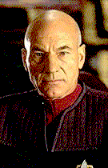

Contents | Features | Reviews | News | Archives | Store |
 |
|
| Movie Credits | Buy It! |
Star Trek: First Contact
Review by Carrie Gorringe
|  | Directed by Jonathan Frakes. Starring Patrick Stewart, Jonathan
Frakes, Screenplay by Brannon Braga and Ronald D. Moore. |
When the crew of the Starship Enterprise was last encountered -- in the truly mediocre 1995 film, Star Trek: Generations -- there were many problems to overcome. Aside from the usual assortment of villains, the crew of TNG also had to defeat an anemic script --they didn’t win that battle -- and the overpowering ghost of the 1960s television series. It didn’t help matters much when William Shatner kept prowling around with an embarrassingly exhausted sense of irony surrounding him like an aura, which was manifested in a tongue stuck so firmly in cheek that it could be seen to be waggling mischievously from every vantage point. In a cinematic franchise, the last high point of which could, arguably, be said to date from 1982, and one not unfamiliar with low points, Generations was the absolute nadir. The film was hardly an auspicious debut for Stewart et al. Star Trek was in danger of becoming Star Dreck, and the vultures, understandably enough, began circling for blood as the release date of First Contact drew closer, especially when it became known that this was going to be another case of an actor with limited directorial experience (Frakes had directed approximately twenty hours of TNG episodes) stepping up to the camera; after all, there was no danger of anyone adding Shatner or Nimoy to the list of cinematic auteurs, so, under the circumstances, Frakes’s willingness to direct First Contact must have seemed like an act of certain career self-immolation.
Well, the vultures will have to find other prey, because First Contact has all of the elements that were in short supply in its predecessor : charm and intelligence among them. The plot is vintage Star Trek : you have your evil, parasitical aliens (in this case, the Borg) who want to alter history in the service of world domination, and the Enterprise crew has to stop them, while the Captain (in this case, Picard) battles his own personal demons, most of which are directly related to his prior experiences with the evil aliens. The whole enterprise (pardon the expression) revolves around a space pioneer named Cochrane (Cromwell), inventor of the warp drive. Dr. Cochrane, somewhat of a hippiefied Chuck Yeager, is supposed to make the first contact with alien life forms on April 4, 2063, and the Borg, through the use of a space vortex, have gone back to prevent this incident from ever taking place. Unfortunately for the Borg, their time vortex brings the Enterprise right along in its wake, and Capt. Picard (Stewart) is placed on the inevitable collision course with his old nemesis, the Borg Queen (Krige).
However, this bare-bones synopsis does not do the film justice, because it is what Frakes does with the basic elements that sets a higher standard. His camera work is surprisingly fluid for a first-time film director -- there are a fair number of elegantly-executed sweeping pans that allow the audience to take in the important details without lulling anyone to sleep, or in the desperate attempt to fill time when there are no other on-screen distractions -- and Frakes shows a great deal of sophistication in his editing style; there are some swish-pan edit matches present here that would try the skill sets of most experienced directors. Frakes’ work is a labor of love, and it shows. He has also been amply assisted by a marvelously witty screenplay (which manages to muster its own ironic charm without undermining the credibility of the more dramatic moments), not to mention a dramatic increase in the special effects budget; one should never discount the power of visual verisimilitude in making a science-fiction story effective.
It is the acting, however, that makes First Contact shine. Although all of the cast members have their wonderful moments, the show really belongs to Stewart, Dorn and Spiner. Allowed to crawl out from under Shatner’s shadow, Stewart is able to resurrect those emotional nuances and ambiguities that made Picard intriguing in the first place. Dorn’s portrayal of Worf is as forceful as might be expected, although even he is permitted his moments of irony, and the idea of a Klingon with an ironic sense of self is a more difficult task to master than might be initially imagined. When last we saw Mr. Spiner, he was playing a wigged - -out scientist who was about to offer himself up -- unintentionally, to be sure -- for alien target practice in Independence Day, and handily stole the scene from those around him (and nearly the film). In First Contact, Spiner’s Data holds his own and then some against Alice Krige’s quietly cold and thoroughly ruthless Borg Queen. His might have been the strongest performance, had it not been for the wonderful dippiness of Cromwell’s Cochrane, a man who invented the warp drive simply because he wanted to retire to a desert island and chase "naked women." Civilization, and progress, is apparently built on psychological middens and accidents, but, if First Contact is an accident, may the franchise be chronically prone to them for years to come.
Contents | Features | Reviews | News | Archives | Store
Copyright © 1999 by Nitrate Productions, Inc. All Rights Reserved.